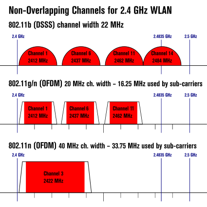
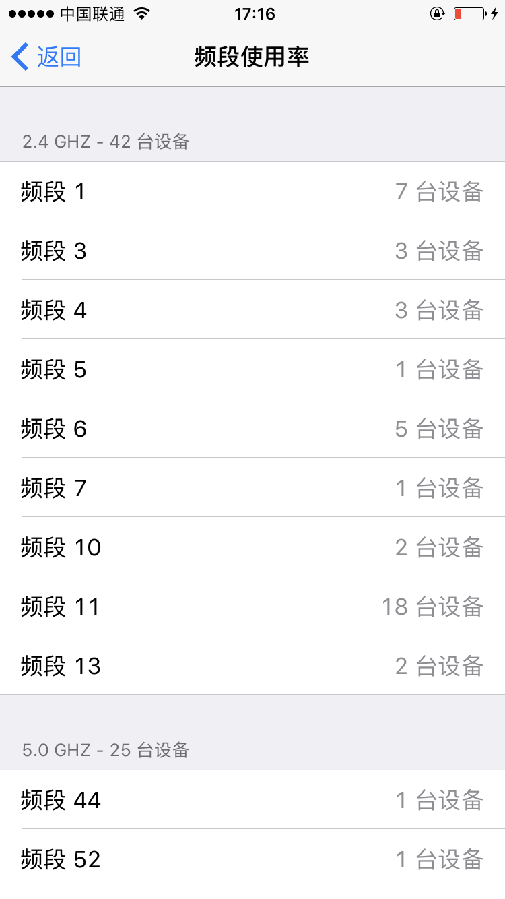
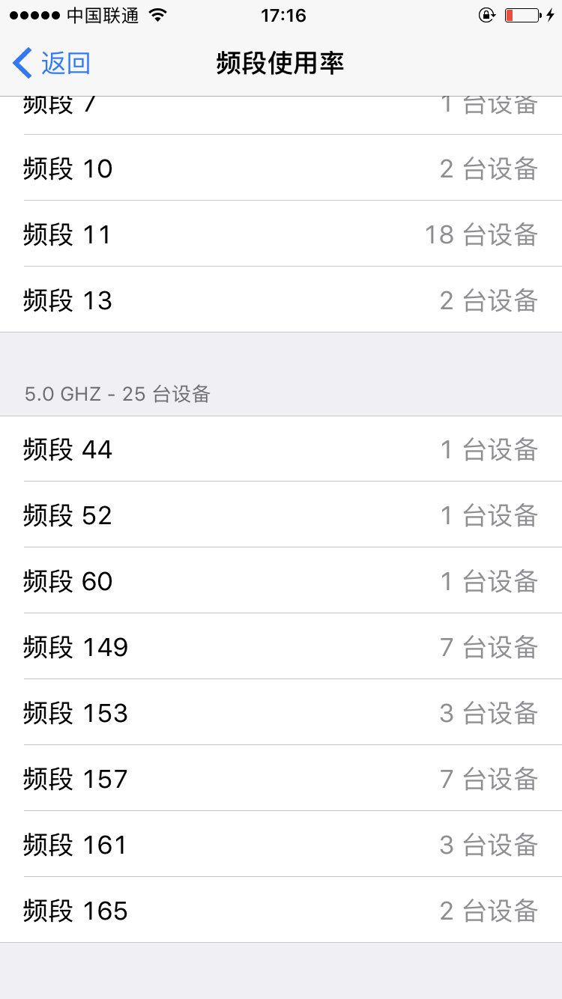

关于Wifi频道
wifi channel
WLAN信道列表是法律所规定的IEEE 802.11（或称为WiFi）无线网络应该使用的无线信道。802.11 工作组划分了4个独立的频段：2.4 GHz、3.6 GHz、4.9 GHz 和 5.8 GHz，每个频段又划分为若干信道。每个国家自己制定了政策订出如何使用这些频段，例如最大的发射功率和调制方式等。
1. WLAN 2.4 GHz
2.4 GHz 频段范围内有每隔 5 MHz 分隔的频道14个（除了第14信道与第13信道相隔了 12 MHz）。2.4G频段有13个左右交叠的信道，其中只能找出3个相互不重合的信道。
1－6－11
2－7－12
3－8－13
3－8－13的top of channel为2483，临近上限2.4835，可能会与其他频谱产生干扰，所以不是最佳选择。
选择1－6－11，而不是2－7－12，是基于兼容性考虑，因为各个国家规定的信道不一样，由于一些国家法律不允许使用12或13信道，所以这个组合是兼容性最好的。
北美/FCC 2.412-2.461GHz(11信道)
欧洲/ETSI 2.412-2.472GHz(13信道)
中国/ 2.412-2.472GHz(13信道)
日本/ARIB 2.412-2.484GHz(14信道）
- 2.4 GHz WiFi 频道与带宽示意图:
- 2.4 GHz WiFi 频段示意图:

世界上绝大多数国家都允许不需要申请许可证使用第1信道到第13信道的。中国允许使用1到13信道。
2. WLAN 5 GHz
可查看5 GHz的频道列表
Wifi 应该如何设置信道
若是2.4 GHz 一般都是使用1，6，11 三个频道，因为这三个频道只受相同频道影响，不受临频影响。
如果在一个信道内存在两个ap（可以简单理解成路由），其是遵从csma／ca协议规则，采用竞争接入的mac协议来避免冲突以及干扰的，从而保证系统能够正常服务。
若两个ap的信道是交叠的话，那么两个ap之间无法执行mac层的csma／ca协议，从而一直互相干扰，从而冲突，导致传输成功概率很低，从而不建议。
ios 用户可以使用ios 应用 airport 来扫描周围的Wifi信号，查看周围设备所用信道，如下图：

